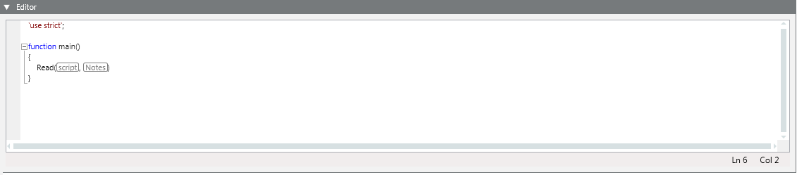
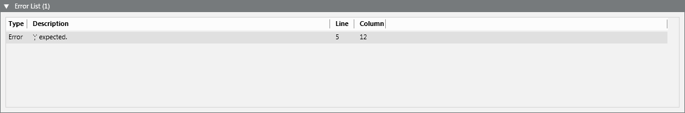
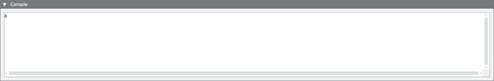

Script Editor Workspace
The scripts available for execution in a project are located under Applications > Logics > Scripts.
In Engineering mode, when you select the main Scripts folder, or any script or subfolder under it, the Script Editor tab displays that lets you write, edit, or import scripts.
The Script Editor application lets you program the scripts and check their validity when the scripts are saved. Invalid scripts are not executed.
Editor Expander
In the Script Editor tab, the Editor expander is where you can view or edit the JavaScript code of your script.

This expander is characterized by:
- Code completion (keywords, variables, methods, functions and parameters)
- Syntax highlighting
- On-the-fly error detection
- Code formatting
- Drag-and-drop of system objects from System Browser, event source from Event List or object properties from the Operation/Extended Operation tab. This saves time instead of entering system object names (for example, full designation) or property names.
A red squiggly line appears under syntax errors while the error description appears in a tooltip. Additional information (including script status and error messages, such as invalid/missing credentials) is provided at the bottom of the expander.
Details of any detected error are available in the Error List expander.
Error List Expander
In the Script Editor tab, the Error List expander provides you with diagnostics for identifying incorrect code. The detected errors display in the expander header in parenthesis.

By default, the expander is collapsed. It is automatically expanded when errors are found into the script code.
- Double-click an error line to go to the corresponding syntax error in the Editor expander.
Each error is identified by:
- Type (
ErrororWarning) - Description (cause of the error)
- Line and Column (location of the error in the script code)
Detected errors include:
- JavaScript syntax errors (for example, "'}' expected").
- Invalid system object designation (for example,
new Object("wrongName"results in the a"The specified object does not exist."error). - The specified object property does not exist.
- The property command specified in the
executePropertyCommandmethod does not exist. - The specified alias identifier cannot be retrieved in the TxG_CommandMacro and cannot be resolved.
- A script specified in the
Includemethod cannot be found. - Invalid number of parameters for a script function.
Console Expander
In the Script Editor tab, the Console expander is where you may want to log diagnostics information to evaluate your JavaScript expressions.

- Click Clear Console to clean up the Console from messages.
Script Editor Toolbar
In the Script Editor tab, the available command icons in the toolbar vary depending on the System Browser selection.
New | Add a new scripts folder under the Scripts main folder. |
Save (CTRL+F5) | Save the changes for the current script. |
Save As | Save the changes to create a new script. |
Delete | Delete the script object or folder currently selected. (You cannot delete the main Scripts folder). |
Start (F5) | Manually start a script. |
Start with parameter (CTRL+F5) | Manually start a script with parameters. |
Stop | Stop a script that was already running. |
Restart | Stop and restart a script that was already running. |
Set Execution Credentials | Set the execution policy for a script. |
Clear Execution Credentials | Clear the execution credentials. |
Step Into (F11) | Step into methods (debug task). |
Step Over (F10) | Step over methods (debug task). |
Step Out (SHIFT+F11) | Step out methods (debug task). |
Clear Console | Clean up the Console expander. |
Expand names | Expand a block of text (such as long object names or long tags) or collapse it to a box identified by a generic name (for example, script box that contains the script long name). |
Show line number | Display line numbers in the script code. |
Import | Import individual scripts (JS files) or collections of scripts (ZIP files)into the project. |
Export | Export individual scripts to JS files and collections of scripts to ZIP files. |
Enable Signature Validation | Enable additional checks on the scripts signature. |